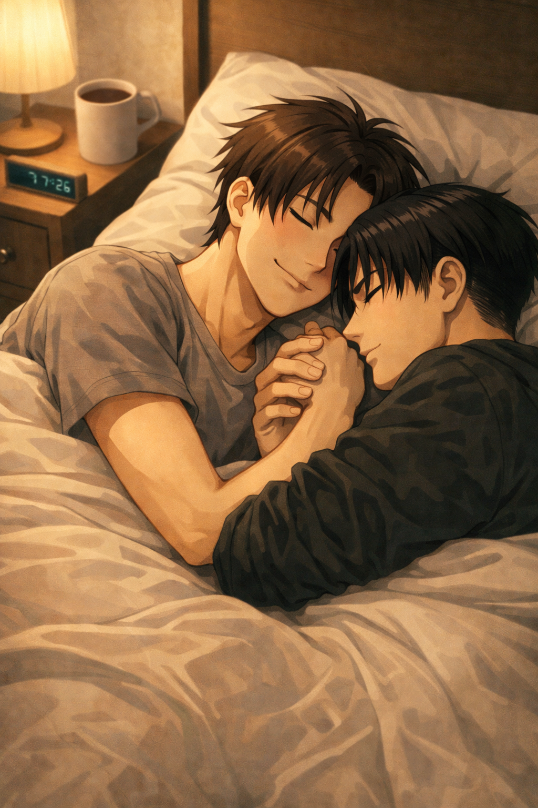

Toi et moi
Levi — POV

Eren was the kind of person people noticed without trying to. Not because he was loud — though he could be — or because he demanded attention. It was easier than that.
He smiled often. Listened easily. Let people orbit him without effort.
Teachers liked him. Students liked him. He belonged everywhere in a way Levi never quite understood.
Levi had noticed him years ago.
High school.
That in-between age where everything felt too big
and not important enough at the same time.
Eren had been in the same class. Still was. A year below him originally, but the kid was smart. Still smiling like the world hadn’t taught him better yet.
Levi told himself it was nothing at first. A passing curiosity. Someone familiar in the hallway. A face he recognized before he realized he was looking for it.
But there were moments.
Small ones. Rare ones.
Times when Eren’s smile slipped — just for a second. When his eyes lost focus. When he went quiet in the middle of laughter, like he’d remembered something that didn’t belong there.
That look.
Levi saw it every time.
Others didn’t seem to. Or maybe they did and didn’t care. Maybe Eren was just good at hiding it again quickly.
Levi noticed because he always noticed things that didn’t fit. The look made his chest tighten in a way he didn’t have a name for yet.
They had worked together once. A group project. Months ago.
Levi had dreaded it at first — being paired with someone like Eren felt like a mistake waiting to happen. Too different. Too visible.
It hadn’t been awkward in the slightest.
Eren had been easy. Focused when needed. Distractible in between.
He laughed when Levi corrected him, thanked him when he helped, leaned closer without realizing he was doing it.
Got frustrated when he didn’t succeed right away. Way funnier than Levi had expected.
They exchanged numbers because they had to.
And then the project ended.
And Eren stopped answering.
Not rudely. Not abruptly. Just… stopped.
Levi told himself that was normal. That people like Eren didn’t linger. That he hadn’t imagined anything real.
That whatever warmth he’d felt was temporary by design. That it was probably just in his head anyway.
Still, the months that followed were worse than before.
Because now Levi didn’t just notice Eren — he missed him. Someone he barely knew.
Missed seeing him in the halls. Missed catching that look and wishing he could erase it.
Missed the way Eren’s attention had felt when it had been directed at him, briefly, accidentally.
He told himself it would pass.
It didn’t.
The message came on a quiet evening. Too ordinary to prepare for.
Levi stared at his phone for a long time.
Read it again. And again.
His heart didn’t race. It sank. Heavy. Careful.
Like something fragile had been set back into his hands without warning.
They talked. Not dramatically. But all at once.
Eren apologized for disappearing. Explained nothing properly.
Said school had been overwhelming. Said he hadn’t known how to talk when he felt like that.
Levi didn’t push. He never did.
They talked about classes. About music. About nothing important.
About things that mattered more than they admitted.
And slowly — carefully — Levi realized something had shifted.
Eren texted first now. Asked questions. Stayed.
And that look… It still appeared sometimes.
But now, when it did, Eren would glance at his phone.
At Levi’s name lighting up the screen.
And it softened. The same way Levi’s heart felt lighter every time he read: What are you doing?
Five years later.
The apartment is small. Not in a way that feels limiting — in a way that feels intentional.
Sunday mornings always start the same. Slow and quiet.
The smell of coffee drifts from the kitchen, warm and familiar, settling into the room before either of them fully wakes.
Levi is already half-awake, tangled in sheets and limbs, Eren sprawled against him like he belongs there.
He does.
Levi thinks, briefly, of the boy he used to watch from a distance. The one who noticed the pauses. The silences. The look no one else seemed to catch.
He understands now what he didn’t then.
It wasn’t longing. Or hope. Or even a crush, really.
It was recognition.
Eren hums softly as he moves, careful not to wake him — which never works.
“You’re awake,” Eren murmurs, amused.
“You breathe too loud,” Levi answers, voice rough, arms tightening around him anyway.
Eren laughs and leans back in, pressing a kiss to Levi’s jaw, then his cheek, then his mouth — nothing rushed, nothing asking.
They’ve learned that love doesn’t need to announce itself.
Eren settles against him again, warm coffee mug forgotten on the nightstand.
“It’s nice,” he says quietly, “that you still miss me.”
Levi opens one eye.
“What do you mean.”
“You told me yesterday,” Eren continues, smiling into his shoulder. “That you missed me. Even though we were together all evening.”
Levi exhales, slow and steady.
“I miss you every day,” he says simply. “I don’t see why that would stop.”
Eren goes quiet for a moment, fingers tracing absent shapes on Levi’s chest.
Levi’s hand finds Eren’s without thinking. Fingers slide together easily, practiced, familiar.
He watches it happen — the way their hands fit, the way Eren’s thumb moves on its own, slow and absent, like it’s always known where to rest.
Levi lets himself look at their hands. At the proof of years spent reaching for the same place.
“I like that,” he admits.
Levi turns his head just enough to look at him.
“This kind of love was never meant to fade,” he says. “It was made to stay. It always was.”
Eren’s smile softens, the same way it did years ago, the same way it always has.
He presses his forehead to Levi’s, breathing him in.
“Good,” he whispers.
Levi closes his eyes again, arms firm around him, heart steady.
The coffee cools. The city wakes.
He misses him,
even now,
even like this.
He loves him,
everyday,
always more.
And he knows — finally — that this is how it stays.